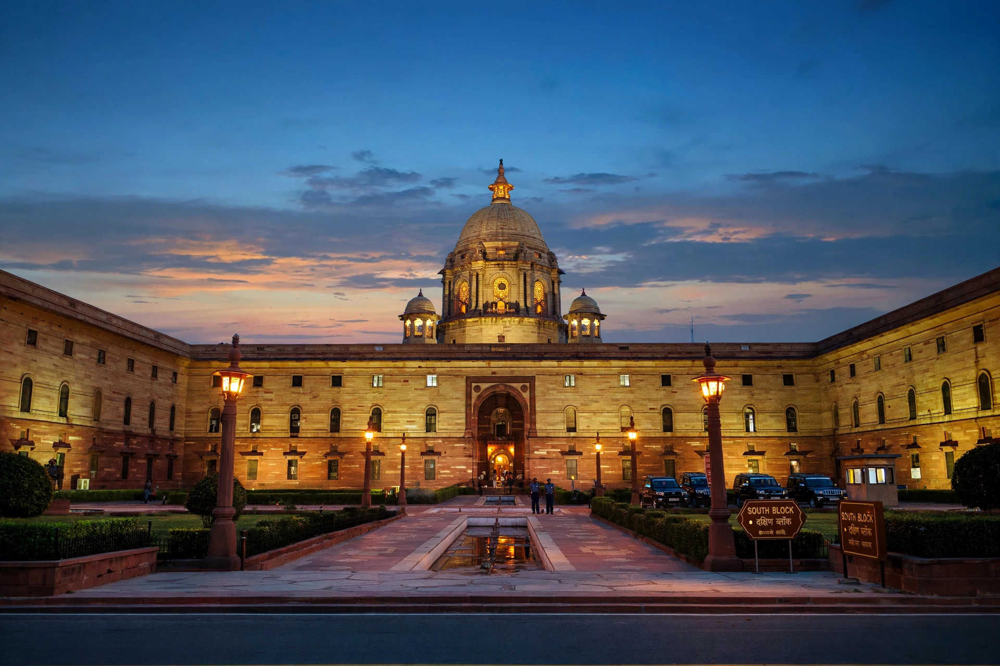

The Prime Minister of India is the head of government of the Republic of India. The prime minister is the chief adviser to the President of India and the leader of the executive branch; executive authority is vested in the prime minister and their chosen Council of Ministers, who are collectively responsible to the Lok Sabha, the lower house of Parliament. The prime minister is usually the leader of the party or coalition with a majority in the Lok Sabha.
| Prime Minister of India | |
| Residence | 7, Lok Kalyan Marg, New Delhi |
|---|---|
| Appointer | President of India |
| Term length | At the pleasure of the President; normally 5 years, subject to confidence of the Lok Sabha |
| Inaugural holder | Jawaharlal Nehru (1947) |
| Formation | 15 August 1947 |

South Block, Raisina Hill, which houses the Prime Minister's Office.
Articles 74 and 75 of the Constitution of India provide for a Council of Ministers, headed by the prime minister, to aid and advise the President, who acts on that advice. The prime minister is appointed by the President and must command the confidence of the Lok Sabha; ministers are appointed on the prime minister's advice. Although the President is head of state and formal chief executive, real executive power rests with the prime minister and cabinet — a position often described by analogy with the Westminster system.
The prime minister allocates portfolios among ministers, chairs cabinet meetings, coordinates government policy, and is the principal link between the President and the Council of Ministers. The prime minister heads the NITI Aayog, the Ministry of Personnel, and (through the Department of Space and the Department of Atomic Energy) India's space and nuclear programmes, and is the political head of the armed forces' policy direction, including authority over the nuclear command structure.
| No. | Name | Term | Party |
|---|---|---|---|
| 1 | Jawaharlal Nehru | 1947–1964 | Indian National Congress |
| 2 | Lal Bahadur Shastri | 1964–1966 | Indian National Congress |
| 3 | Indira Gandhi | 1966–1977, 1980–1984 | Indian National Congress |
| 4 | Morarji Desai | 1977–1979 | Janata Party |
| 5 | Charan Singh | 1979–1980 | Janata Party (Secular) |
| 6 | Rajiv Gandhi | 1984–1989 | Indian National Congress |
| 7 | Vishwanath Pratap Singh | 1989–1990 | Janata Dal |
| 8 | Chandra Shekhar | 1990–1991 | Samajwadi Janata Party |
| 9 | P. V. Narasimha Rao | 1991–1996 | Indian National Congress |
| 10 | Atal Bihari Vajpayee | 1996, 1998–2004 | Bharatiya Janata Party |
| 11 | H. D. Deve Gowda | 1996–1997 | Janata Dal |
| 12 | Inder Kumar Gujral | 1997–1998 | Janata Dal |
| 13 | Manmohan Singh | 2004–2014 | Indian National Congress |
| 14 | Narendra Modi | 2014–present | Bharatiya Janata Party |
Acting prime ministers Gulzarilal Nanda (1964, 1966) are not numbered. Indira Gandhi was India's first and, to date, only woman prime minister, and Nehru the longest-serving, at over sixteen years.
The official residence is 7, Lok Kalyan Marg in New Delhi (the street was renamed from Race Course Road in 2016). The Prime Minister's Office (PMO) is located in South Block on Raisina Hill.